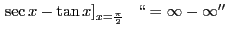
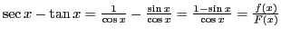
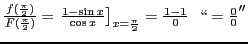
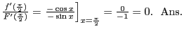

Next: Exercises Up: Theorem of mean value; Previous: Evaluation of the indeterminate Contents Index
It is possible in general to transform the expression into a fraction
which will assume either the form
 or
or
 .
.
Solution. . Therefore, this is an indeterminate form. By Trigonometry,
.
. Therefore, this is an indeterminate form.
